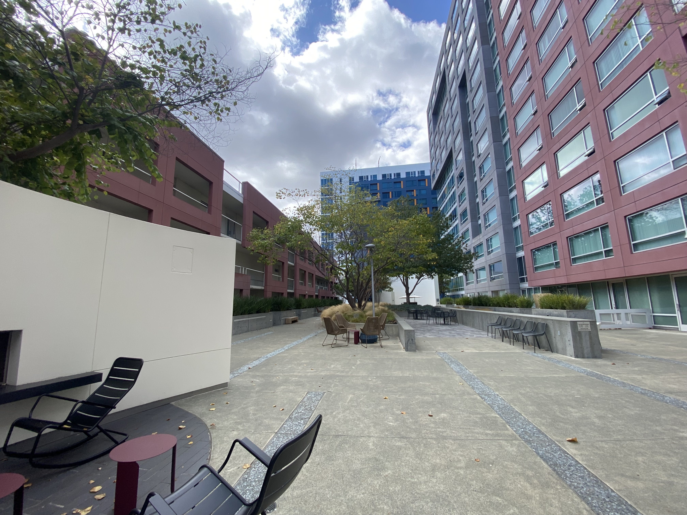
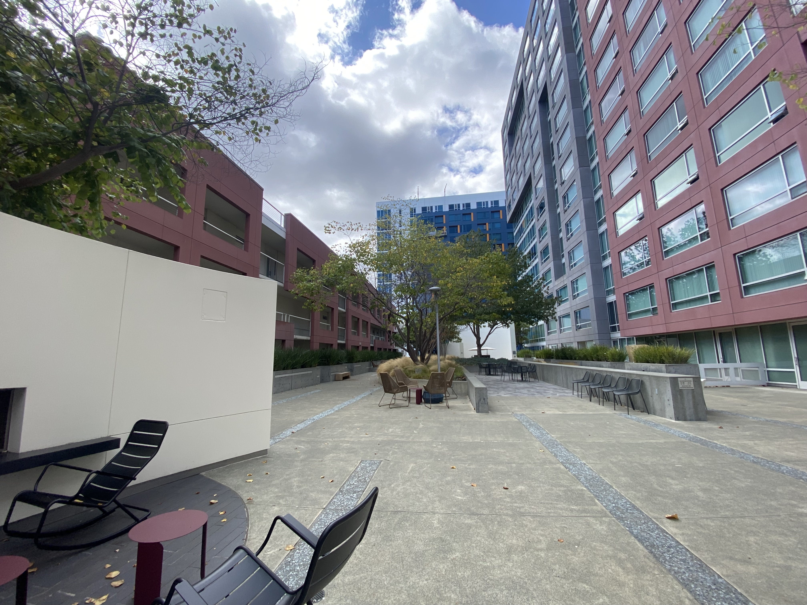

A.1: Shoot the Pictures
Images are taken from the courtyard of a building complex. The images are good candidates for creating a mosaic as they naturally contain a lot of corners due to vertical and horizontal line intersections.
 


A.2: Recover Homographies
To compute the homography between two images, the correspondences are first marked manually and stored in a txt file.

Once 1-1 point to point correspondences are established, homography is computed via least squares. Below is the code snippet along with comments that compute the homography matrix.
Compute homography
def compute_homography(pts1_n, pts2_n):
A = []
# Populate the A matrix to form Ah = 0
for (x, y), (u, v) in zip(pts1_n, pts2_n):
A.append([x, y, 1, 0, 0, 0, -u*x, -u*y, -u])
A.append([0, 0, 0, x, y, 1, -v*x, -v*y, -v])
A = np.array(A)
# Compute the SVD of A
U, S, Vt = np.linalg.svd(A)
# Last column of V or last row of V transpose is the least squares solution to Ah = 0
H = Vt[-1,:].reshape(3,3)
# The scale is factored out from the homography matrix
H /= H[-1,-1]
return H
Estimated homography between left and mid image
[[ 1.69867416e+00 4.05641368e-02 -1.20704547e+03]
[ 2.37761687e-01 1.43178785e+00 -5.77526132e+02]
[ 1.65231738e-04 2.09763667e-05 1.00000000e+00]]
Estimated homography between right and mid image
Estimated homography between right and mid image:
[[ 5.07890256e-01 4.81447356e-03 8.33327316e+02]
[-2.01050693e-01 7.71031301e-01 3.65449108e+02]
[-1.21041275e-04 -4.04771370e-06 1.00000000e+00]]
A.3: Warp the Images
In this section, a planar object in the projective plane i.e. image plane is transformed to a front facing plane with dimensions of choice. Inverse Warping is used to avoid holes and two different techniques are tested for interpolation.


| Interpolation Method | Visual Quality | Computation Time (ms) |
|---|---|---|
| Nearest Neighbor | Pixelated edges, blocky artifacts | 12.5 (Faster) |
| Bilinear Interpolation | Smoother transitions, better continuity | 18.3 (Slower) |